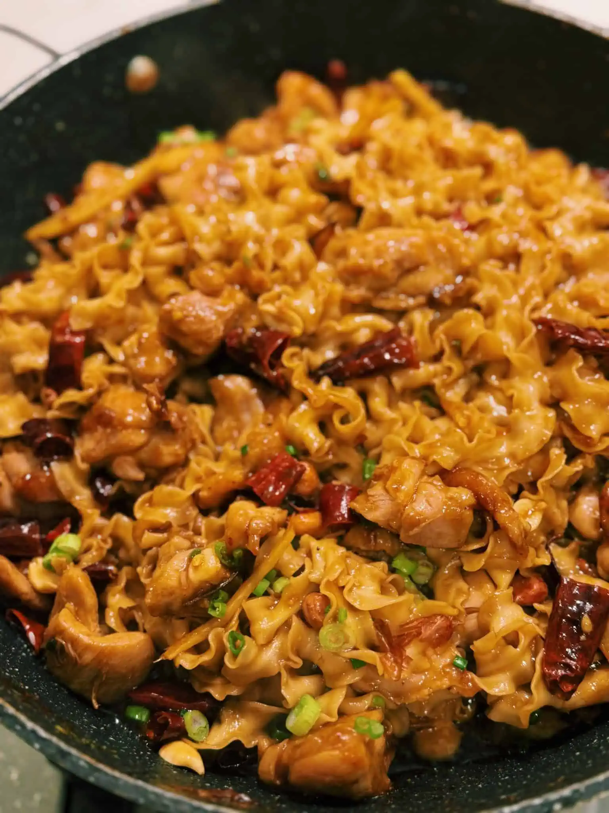

Kung Pao Chicken Noodles

Description
Prep Time: 15 mins | Active Time: 25 mins | Total Time: 40 mins
Course: Dinner, Main Course | Cuisine: Asian
Yield 4 servings | Calories: 558kcal
Ingredients
- 6 Chicken Thigh boneless skin on, cut into bite-size pieces
- 4 packs Hand Cut Noodles
- 2 tbsp Ginger julienne
- 1 tbsp Garlic minced
- 2 Green Onion chopped
- 1 tsp Sichuan Peppercorn
- 1/4 cup Dry Red Chilli
Chicken Marinade
- 1.5 tbsp Soy Sauce
- 1.5 tbsp Oyster Sauce
- 1 tsp Black Pepper
- 2 tbsp cornstarch
Sauce
- 4 tbsp Soy Sauce
- 2 tbsp Black Vinegar
- 1 tbsp Dark Soy Sauce
- 2 tbsp Sugar
- 1/2 cup water
- 1 tsp cornstarch
Toppings
Steps
-
Marinate the chicken with 1.5 tablespoon soy sauce, 1.5 tablespoon oyster sauce, 1 tsp black pepper, and 2 tablespoon corn starch for 10 minutes.
- In the meantime, mix soy sauce, black vinegar, dark soy sauce, sugar, water, and cornstarch. Mix well, making sure the corn starch isn’t settled at the bottom.
- Bring a pot of water to boil, and cook noodles for 4-5 minutes or until al-dente. Drain and set aside. You can drizzle 1 tsp of oil and toss the noodle to prevent the noodles from sticking together.
- In a pan, drizzle in oil and add in the chicken. Pan-fry for 8-9 minutes or until chicken is brown.
- In the same pan, add ginger, Sichuan peppercorn, dry red chili, white parts of the green onion, and garlic. Saute for 2-3 minutes or until fragrant.
- Next, add noodles, chicken, and drizzle to the sauce. Saute on high heat for 2-3 minutes or until noodles soak up all the sauce.
- Finish off with roasted peanuts and green onion, and enjoy!